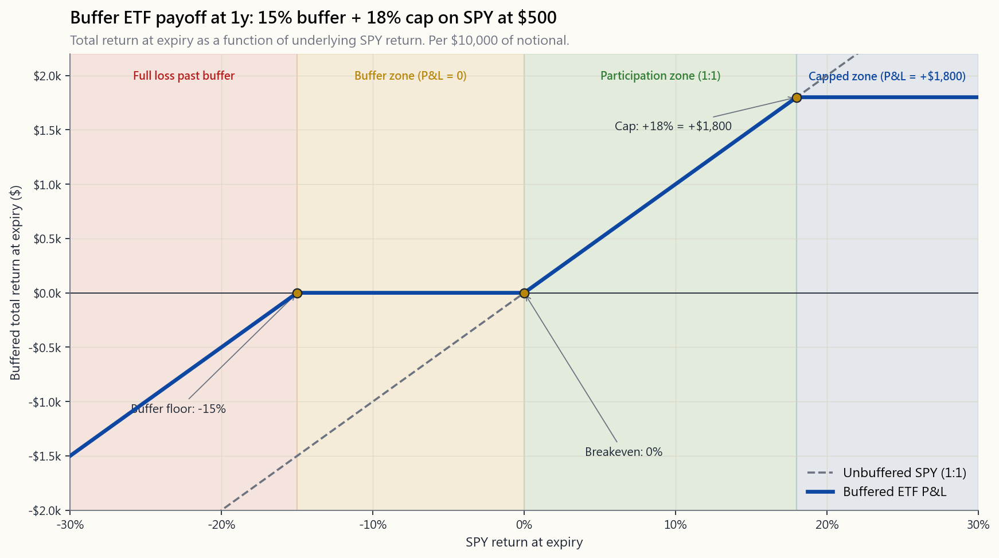
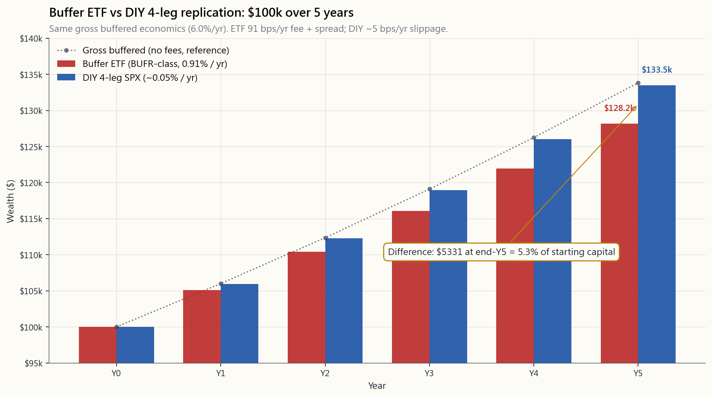

Week 48: Structured Products — Buffer ETFs, Principal-Protected Notes, and Replicating Them DIY
1. Why This Is Important
Wall Street's most reliable business is repackaging things you could buy yourself, charging a fee for the wrapping, and selling the result as a "solution." Structured products are the cleanest 2026 example. Buffer ETFs and principal-protected notes have grown from a rounding error in 2018 to over $50 billion in defined-outcome ETF assets and several hundred billion in retail-distributed structured notes. The marketing is irresistible — "S&P 500 upside up to a 18% cap, with a 15% downside buffer, over a 12-month period" — and the mechanics, once you see them, are a strict subset of what Weeks 25 through 30 already taught you.
You need to understand these products for four reasons:
series), First Trust Cboe Vest (the FT series), and Allianz are running television and brokerage-platform campaigns explicitly framed at investors who lived through 2008, 2020, or 2022 and now want "protection." Your advisor, your 401(k) target-date overlay, your in-laws' brokerage statement — you will encounter these. The fastest way to evaluate them is to know the option positions inside.
25–30.** Every buffer ETF is a long zero-coupon bond plus a bull-call-spread plus a short put — three pieces, all of which we priced together in Week 29 with Black–Scholes. Once you see the decomposition, the "magic" of the buffer disappears. Alpha is rare, and a 79bps fee for arithmetic you can reproduce in your own brokerage account is not alpha — it is a convenience tax.
ETF's headline expense ratio is around 0.79%. The hidden costs — bid-ask on the underlying SPX options, the spread between the cap the issuer offers and the cap the structure could mathematically support, the timing of the quarterly reset — bring the all-in cost to roughly 1.5%. A retail principal-protected note from a bank can embed 2% to 4% of issuance fees inside the cap, term, and credit-spread haircut. The DIY equivalent, executed once a year on 1-year SPX options, costs around 5 basis points of slippage per leg, or ~20bps total. That is a 7-to-30× cost ratio.
on the base of the portfolio (boring compounder) plus a small convex sleeve. A buffer ETF tries to sell you the whole portfolio: capped upside, cushioned downside, no convex sleeve. On the tax side, SPX options inside a DIY buffer are 1256 contracts — 60/40 long/short tax — while a buffer ETF is ordinary CG and the structured note is paid out as ordinary income at maturity. The post-tax difference compounds.
This lesson teaches the mechanics, the DIY replication, the realistic fee comparison, and the conditions under which the packaged product is actually worth its cost.
2. What You Need to Know
2.1 What a Buffer ETF Actually Owns
A 1-year buffer ETF on the S&P 500 with a 15% downside buffer and an 18% upside cap is, on the inception date, a portfolio of three positions on the underlying index (SPX or SPY):
equivalent) that returns par at maturity. This guarantees the principal delivery before any option payoff is computed.
bottom and 18% out-of-the-money on the top. This is the participation: you receive 1-for-1 upside up to the cap.
the spread. The premium you collect on the short put is exactly what pays for the long call leg of the spread, which is why the cap exists in the first place.
The four legs net out to a payoff that, at expiry, looks like:
- Index up by more than 18%: you receive 18%, capped.
- Index up by 0% to 18%: you receive the index's return, 1-for-1.
- Index down by 0% to 15%: you receive 0% (the buffer).
- Index down by more than 15%: you receive (index_return + 15%) —

The shape is identical to what you would build by hand from four SPX options. That is the central observation.
2.2 The DIY Replication on 1-Year SPX Options
With SPY at $500 in April 2026, a 12-month buffer with the same 15% buffer and 18% cap is replicated on SPX (10× the SPY notional, so strikes are 5000-anchored). Per $50,000 of notional:
| Leg | Action | Strike | DTE | BSM Price |
|---|---|---|---|---|
| 1 | Long zero-coupon T-bill notional | — | 365d | 95.79% par |
| 2 | Long SPX call | 5000 (ATM) | 365d | $310 |
| 3 | Short SPX call | 5900 (+18% cap) | 365d | $48 |
| 4 | Short SPX put | 4250 (-15% buffer) | 365d | $112 |
Net out:
- T-bill cost: $47,895 of $50,000 notional (1y at 4.3%).
- Bull-call-spread debit: $310 - $48 = $262 per share-equivalent.
- Short-put credit: $112 per share-equivalent.
- Net spread cost: $262 - $112 = $150 per share-equivalent ≈ 3.0%
- Add T-bill drag: total = ~$2,255 of explicit cost on $50,000 =
Total slippage executing all four legs at the mid-point ± typical retail spreads on 1y SPX options: roughly 5bps per leg × 4 legs = ~20bps round-trip, plus ~1–2 commissions per leg. Call it 25bps.
2.3 The Fee Comparison Over 5 Years
Buffer ETFs in the Innovator BUFR series and First Trust Cboe Vest series charge expense ratios in the 0.79%–0.85% range. Add typical secondary-market bid-ask of ~12bps and you are at roughly 91bps per year of explicit cost. Over a 5-year horizon, on a $100,000 starting balance, the wealth gap vs. the DIY equivalent is not small.

The gap is ~$4,900 on $100k — roughly 3.7% of the starting balance — purely from the fee differential. Scale to $500k and that is $24,500 paid to a fund company for option trades you could place yourself.
The honest counter-argument: the DIY version requires a Level 3 options account, four execution legs per year on roll dates, and discipline through a year-long expiry cycle. The fund company is selling the discipline plus the operational lift. Whether that is worth 80bps/yr is the real question — and for most retail investors who can run Week 30's spread builder, the answer is no.
2.4 Principal-Protected Notes and Bank Credit Risk
Principal-protected notes (PPNs) are bank-issued debt instruments, not ETFs. A typical 5-year structured note from a major US bank in 2026 might promise: "100% principal back at maturity; participation in the S&P 500 with a 30% cap." On the surface this looks like a buffer ETF with a longer term and no buffer-floor erosion.
What is buried in the prospectus:
- Issuer credit risk. When Lehman Brothers collapsed in 2008,
- Embedded fees of 200–400 bps. The bank prices the note such
- Illiquidity. PPNs trade rarely on the secondary market. If
- Tax treatment. Principal-protected notes are typically taxed
The DIY equivalent for the 5-year note above: a 5-year zero-coupon Treasury for principal protection, plus 5-year SPX call options for the upside. Both pieces are bankruptcy-remote (Treasury is the sovereign, options are CCP-cleared). All-in cost: a tighter cap, no issuer credit risk, no illiquidity, and 1256-contract tax treatment.
Horace's view — I do not buy structured notes. Bank credit risk is the unhedgeable risk in a US-equity-centric global portfolio where the tail-hedge sleeve is supposed to reduce exotic counterparty exposure, not add a new one — and the tax envelope on a CPDI-classified note is meaningfully worse than the DIY 1256 alternative. The packaged product solves a problem retail investors do not have. If you cannot place the four legs yourself, hold the index; if you can, build the structure on Treasuries plus listed options and keep the bank's profit margin in your own pocket.
The barbell-compatible DIY alternative is concrete and small. For a 5-year horizon: buy a 5-year zero-coupon Treasury sized to your principal-protection target — that is the safety end of the barbell expressing itself, with the issuer being the US Treasury rather than a single bank balance sheet — then buy a 5-year SPX call (or a small ladder of LEAPs rolled forward) sized to the participation you wanted. Both legs are bankruptcy-remote, both are publicly priced, and the call leg gets 1256 60/40 treatment instead of CPDI ordinary income. The shape is exactly what the structured note was trying to sell you, with the wrapper cost and the credit risk both removed.
2.5 The Three Conditions Under Which the Packaged Product Wins
There are situations where buying the wrapper is rational:
employer brokerage accounts do not permit options trading at all. In a non-options account, the buffer ETF is the only way to get the buffered exposure and the 80bps fee is unavoidable.
suspect you would not actually execute the four-leg roll on the anniversary date — or worse, would close one leg early in a panic — the fund company is selling you the commitment to the structure. A buffer ETF cannot be "broken into" mid-period the way a self-managed structure can.
Below ~$50k of notional you are forced into SPY options, which are more expensive, less tax-efficient (no 1256 treatment until they are SPX-cash-settled), and require more contracts. The fund company's pooling lets sub-$50k accounts access the SPX-priced structure indirectly.
Outside these three conditions, the DIY version is strictly better on cost and tax. Alpha is rare, and 80bps for an arithmetic identity is not alpha.
2.6 The Barbell Read on Buffered Products
The barbell view frames the portfolio as a base (boring, compounding) plus a small convex sleeve. Buffered ETFs collapse both legs into a single flat-payoff structure: capped upside, buffered downside, convex sleeve sold to finance the structure (the short put leg). At the portfolio level this is anti-barbell: you have given up the convex left tail (because the short put leg loses badly past the buffer) and you have given up the convex right tail (because of the cap). What remains is the middle of the distribution.
For most retail compounders this is the wrong trade. The middle of the distribution is what you already get from index funds; the tails are where the volatility-tail-wags-the-dog effect compounding shows up. Paying 80bps to delete both tails is not insurance — it is a tactical bet that the index will spend the year between -15% and +18%. The 1928–2024 base rate for that range is roughly 55%.
3. Common Misconceptions
first 15% of a drawdown over the outcome period (typically 1 year). Below the buffer, you take the full loss minus the buffer amount. In a 2008 scenario (-37%), a 15%-buffered product loses -22%, not zero.
that much."** The 1928–2024 S&P 500 returned more than 18% in roughly 36% of calendar years. The cap binds more than 1 in 3 years.
less safe in one critical dimension: bank credit risk. ETFs are bankruptcy-remote trusts; PPNs are unsecured debt of the issuer. Lehman PPNs returned ~9 cents on the dollar in 2008.
buffer ETF includes the spread between the cap offered and the theoretically achievable cap (typically 50–100bps), the bid-ask on the underlying SPX options the fund executes (10–30bps), plus the headline expense ratio (~80bps). Total is closer to 1.4%.
The reset only protects against losses in the new outcome period. If the market drops 10% in month 11 and recovers 5% in month 12, your current buffer absorbs nothing because the buffer is measured from the period start, not from your peak.
SPX options, executed once per year on the anniversary date, with strikes computable from a Black–Scholes calculator. Week 30's spread builder already showed this is Level 3 retail homework.
the market drops more than 15%, after which every percent down is 1-for-1 yours. A -30% year on a 15-buffer product is -15%, which is not sleeping-well territory.
the client."** Banks price PPNs with 2–4% of profit baked in. They expect to make that profit on average. The client pays it either as opportunity cost (a worse cap), liquidity cost (no secondary market), or tax cost (CPDI rules).
defined; whether it is good depends on what the index does. The structure is still a directional bet — narrower than a long-only equity bet, but a bet nonetheless.
You can, but you receive the secondary-market price, which reflects the current mark-to-market of the underlying option structure — not the "buffer" or "cap" advertised. Mid-period holders have no buffer; they have an opaque option exposure.
4. Q&A Section
Q1: Why does the cap exist in the first place? Because the short-put leg is what finances the bull-call-spread leg. The premium implicitly received on the short put is fixed by implied volatility on the buffer strike. That premium is enough to pay for some of the upside spread, but not all of it — so the upper strike of the spread is set at the level where the math balances. Higher IV → wider achievable spread → higher cap.
Q2: Can I get a buffer larger than 15%? Yes — there are 20% and 30% buffer products in the Innovator series. The cost is a lower cap (typically 10–13% on a 30-buffer product). The deeper buffer requires selling a more-OTM put (less premium) plus a more-OTM call (less premium received from the sold call leg of the upper bound), so the achievable cap shrinks roughly linearly.
**Q3: How does this interact with the 1256 tax treatment from Week 39?** SPX options are Section 1256 contracts and receive 60/40 long-term/ short-term treatment regardless of holding period. A DIY buffer implemented on SPX options inherits this — the realized P&L at expiry or close is taxed at the blended 1256 rate (~21.8% at a 32% ordinary bracket). A buffer ETF holds the options inside the fund, so you get fund-level tax: ordinary CG on distributions and your own LTCG/STCG on the ETF shares depending on holding period. PPNs are taxed as ordinary income under CPDI rules. Ranking from best to worst at a 32% bracket: DIY SPX (~21.8%) > buffer ETF (LTCG 15–20% on ETF shares, but you pay annual ordinary CG distributions on internal P&L) > PPN (32%+).
Q4: What happens if I buy a buffer ETF mid-period? You inherit the remaining buffer and cap from the period-start strikes. If the market is already +10% into the period and you buy in, your effective upside is now the cap minus 10% (i.e. ~8% if cap was 18%) and your effective buffer is the original 15% buffer relative to the period start, which means you are only protected if the market drops more than 10% from where you bought. The labelled "15% buffer" is no longer your buffer.
**Q5: How do I size the four DIY legs to match $50k of buffered exposure?** For SPX-anchored: $50k / SPX_level / multiplier = number of SPX spreads. With SPX at 5000, that is $50k / 5000 / $100 = 0.10 contracts per share — so for cleanest sizing, use $100k notional = 2 contracts of each leg. For SPY: $50k / SPY_price / 100 = $50k / $500 / 100 = 1 contract of each leg, which works at a single 1-contract scale.
**Q6: Why not just hold SPY plus a long put for the same protection?** A long put has no cap on the upside but costs 4–5% of notional per year (for ATM 1y puts). The buffer structure trades the ~5%/yr put cost for the cap — capping upside at 18% in exchange for not paying that 5%/yr drag. It is a different tradeoff: barbell (SPY + put) keeps the convex tails at the cost of carry; buffer collapses the distribution at the cost of tails. If your portfolio already has a convex sleeve (Week 47's tail hedge), you do not need the buffer structure on top of it.
Q7: What is the worst-case outcome on a buffer ETF? The market drops to zero. You get max(index_return + buffer, -100%). On a 15% buffer, you lose 85% of capital. The buffer never guarantees principal — it only absorbs the first 15% of loss.
Q8: Do PPNs ever make sense? Niche cases: an investor with very specific tax circumstances (e.g., trust structures where the deferral of CPDI matches a planned liquidity event), or institutional accounts that need a CUSIP-based debt-instrument wrapper for compliance reasons. For a typical retail investor in a taxable account, the answer is essentially never — ETFs and DIY beat them on every dimension that matters.
**Q9: How do I evaluate a new structured product I have not seen before?** Decompose it into its option legs. Every structured product is a linear combination of zero-coupon bonds plus options on the underlying. Price the legs in a Black–Scholes calculator (or use the Week 48 interactive). Compute the all-in cost as (prospectus_value - sum_of_legs) / notional. If the answer is greater than 50bps/yr, you are paying a fee high enough that DIY is strictly better in any account that can trade options.
Q10: What is the right portfolio role for a buffer ETF? For most investors: zero. The middle-of-distribution exposure is already in the index portion of the portfolio at lower cost. If the investor is constrained to a non-options account and psychologically needs the floor to stay in the market through a downturn, allocating 5–15% to a buffer ETF as a behavioural bridge can be defensible. This is a behavioural product, not a return- enhancement product.
第48週：結構性產品——緩衝交易所買賣基金、保本票據，以及自行複製
1. 為何此課題至關重要
華爾街最穩定的業務，是將你本可自行買入的東西重新包裝，收取包裝費用，再以「解決方案」之名出售。結構性產品正是2026年最典型的例子。緩衝交易所買賣基金與保本票據，從2018年微不足道的規模，已增長至逾500億美元的定義結果交易所買賣基金資產，以及數千億美元的零售分銷結構性票據。其市場推廣令人難以抗拒——「標準普爾500指數上漲空間最高18%封頂，下跌15%受保障，為期12個月」——而其運作機制，一旦你看透，不過是第25至30週所教授內容的一個子集。
你需要了解這些產品，原因有四：
本課程講授其機制、DIY複製方法、切實可行的費用比較，以及哪些情況下選用包裝產品確實物有所值。
2. 你需要掌握的知識
2.1 緩衝交易所買賣基金實際持有甚麼
一隻具有15%下行緩衝及18%上行封頂的1年期標準普爾500指數緩衝交易所買賣基金，在起始日擁有標的指數（SPX或SPY）上的三個持倉：
四個組成部分合計，到期收益如下：
- 指數上漲逾18%：獲得18%，封頂。
- 指數上漲0%至18%：按比例獲得指數回報，1比1。
- 指數下跌0%至15%：獲得0%（緩衝區）。
- 指數下跌逾15%：獲得（指數回報 + 15%）——緩衝區吸收首15%跌幅，餘下跌幅由持有人承擔。
這個形狀，與你用四隻SPX期權自行構建的結果完全相同。這正是核心觀察。
2.2 以1年期SPX期權進行DIY複製
以2026年4月SPY報$500計，同樣具15%緩衝及18%封頂的12個月緩衝結構，可在SPX期權上複製（SPY名義值的10倍，以5000為行使價基準）。以$50,000名義值計算：
| 組成部分 | 操作 | 行使價 | 距到期日 | BSM定價 |
|---|---|---|---|---|
| 1 | 零息短期國庫券名義值長倉 | — | 365日 | 票面值95.79% |
| 2 | SPX認購期權長倉 | 5000（等價） | 365日 | $310 |
| 3 | SPX認購期權短倉 | 5900（+18%封頂） | 365日 | $48 |
| 4 | SPX認沽期權短倉 | 4250（-15%緩衝） | 365日 | $112 |
合計計算：
- 短期國庫券成本：$50,000名義值中的$47,895（1年期，利率4.3%）。
- 牛市認購價差策略淨支出：$310 - $48 = $262（每份相當股份）。
- 認沽期權短倉收入：$112（每份相當股份）。
- 價差策略淨成本：$262 - $112 = $150（每份相當股份），約佔名義值3.0%。
- 加上短期國庫券拖累：合計約$2,255顯性成本（$50,000名義值），即消耗名義值約4.5%，正是這使封頂為18%，而非零成本下可達到的21–22%。
2.3 五年費用比較
Innovator BUFR系列及First Trust Cboe Vest系列的緩衝交易所買賣基金，開支比率介乎0.79%至0.85%。加上二級市場典型買賣差價約12個基點，顯性成本合計約91個基點每年。在五年投資期內，以$100,000起始資金計算，與DIY等效方案相比，財富差距不容小覷。
差距約$4,900（以$100,000計算）——純粹源於費用差異，約佔起始資金3.7%。以$500,000計算，則需向基金公司繳付$24,500，換取你本可自行執行的期權交易。
誠實的反論：DIY版本需要Level 3期權賬戶、每年在重設日執行四個交易腿，並在長達一年的到期周期中保持紀律。基金公司出售的是紀律加上操作便利。對大多數能完成第30週價差構建工具作業的零售投資者而言，這是否值得每年80個基點——答案是否定的。
2.4 保本票據與銀行信用風險
保本票據（PPNs）是銀行發行的債務工具，而非交易所買賣基金。2026年，一隻典型的美國大型銀行5年期結構性票據，或承諾：「到期100%本金返還；參與標準普爾500指數，上限為30%。」表面上，這看似一隻期限更長、無緩衝底限侵蝕的緩衝交易所買賣基金。
招股章程埋藏的內容：
- 發行人信用風險。 2008年雷曼兄弟破產時，持有雷曼發行保本票據的投資者，即使票據明確載明「保本」，在破產程序中亦僅獲分配每元幾分。所謂「保障」不過是銀行的無抵押優先債務。堅守你能核實的美國上市索償工具。交易所買賣基金具有破產隔離保護；銀行票據則沒有。
- 嵌入費用200至400個基點。 銀行為票據定價時，令投資者的全包預期成本達到名義值的2–4%，按5年期限攤銷。這體現為較低封頂、較長期限或較大的標的參與折讓。
- 流動性差。 保本票據在二級市場鮮有交易。如需在到期前套現，發行該票據的交易商報價將再扣減1–3%的折讓。
- 稅務處理。 保本票據通常根據附條件付款債務工具（CPDI）規則，在到期時就或然付款按普通收入課稅，而非資本增值。以32%聯邦稅率加上5%州稅計算，比合資格長期資本增值差19個百分點。
陳馬的觀點——我不購買結構性票據。 銀行信用風險是一個美國股票為核心的全球投資組合中無法對沖的風險，而尾部對沖倉位本應降低奇異對手方風險，而非新增一個——況且CPDI分類票據的稅務架構，較DIY 1256方案在實質上更差。包裝產品解決的是零售投資者根本沒有的問題。若你無法自行執行四個交易腿，就持有指數基金；若你能，便以國債加上市列期權構建結構，將銀行的利潤留在自己口袋。
與啞鈴策略相容的DIY替代方案具體且簡單。以5年投資期為例：購買一隻按本金保護目標規模的5年期零息國債——這正是啞鈴安全端的體現，發行人是美國財政部而非單一銀行資產負債表——再購買規模與你所需參與度相符的5年期SPX認購期權（或分批滾動的長期期權梯形組合）。兩個組成部分均具破產隔離保護，均公開定價，認購期權獲得1256合約60/40稅務處理，而非CPDI普通收入稅。其結構形狀與結構性票據所試圖出售的完全一致，卻免除了包裝成本及信用風險。
2.5 包裝產品勝出的三種情況
以下情況下購買包裝產品屬合理選擇：
除上述三種情況外，DIY版本在成本及稅務上均嚴格優於包裝產品。阿爾法稀有，而每年80個基點換來的算術恆等式，稱不上阿爾法。
2.6 從啞鈴策略角度解讀緩衝產品
啞鈴策略將投資組合框架為基礎（沉悶的複利資產）加上小型凸性倉位。緩衝交易所買賣基金將兩個組成部分合而為一，成為單一的平坦收益結構：上漲空間封頂，下跌空間受緩衝，凸性倉位被出售以資助結構（認沽期權短倉）。從投資組合層面看，這是反啞鈴的：你放棄了凸性左尾（因認沽期權短倉在緩衝底限以下損失慘重），亦放棄了凸性右尾（因封頂所致）。剩下的是分佈的中間部分。
對大多數零售長期投資者而言，這是錯誤的取捨。分佈的中間部分，正是你從指數基金以3個基點已能獲得的；尾部才是波動性主導複利效應的地方。支付80個基點以刪去兩個尾部，並非保險——而是押注指數全年波幅將介乎-15%至+18%之間。1928至2024年，該區間的歷史概率約為55%。
3. 常見誤解
4. 問答環節
問題1：封頂為何存在？ 因為認沽期權短倉是資助牛市認購價差策略的來源。認沽期權短倉隱性收取的期權金，由緩衝行使價的引伸波幅決定。該期權金足以支付部分上行價差，但不足以支付全部——因此，價差的上行行使價設於數學平衡之處，此即封頂。引伸波幅越高，可達到的價差越寬，封頂越高；引伸波幅越低，封頂越低。起始時鎖定的水平，便是你持有的內容。
問題2：我可以獲得逾15%的緩衝嗎？ 可以——Innovator系列提供20%及30%緩衝產品。代價是較低的封頂（30%緩衝產品的封頂通常為10–13%）。更深的緩衝需要出售更深度價外的認沽期權（收取較少期權金），以及更深度價外的認購期權（上限行使價收取的期權金較少），因此可達封頂大致呈線性收窄。
問題3：這與第39週的1256稅務處理有何關係？ SPX期權是第1256條合約，無論持有期長短，均獲60/40長期/短期稅務處理。以SPX期權構建的DIY緩衝繼承此待遇——到期或平倉時實現的損益，按1256混合稅率課稅（32%普通稅率下約21.8%）。緩衝交易所買賣基金在基金內部持有期權，因此你獲得基金層面稅務處理：分派按普通資本增值課稅，ETF份額的損益則視持有期按長期或短期資本增值課稅。保本票據在CPDI規則下按普通收入課稅。在32%稅率下由優至劣排序：DIY SPX（約21.8%）> 緩衝交易所買賣基金（ETF份額按長期資本增值15–20%，但內部損益分派按年度普通資本增值課稅）> 保本票據（32%以上）。
問題4：如果我在結果期中途買入緩衝交易所買賣基金，會發生甚麼？ 你繼承期初行使價所剩餘的緩衝及封頂。若市場在結果期內已上漲10%，你此時買入，實際可獲上漲空間為封頂減去10%（即若封頂為18%，你的有效上行為約8%），而你的有效緩衝是以期初計算的原始15%緩衝，即你只在市場自買入時下跌逾10%才受保護。標示的「15%緩衝」不再是你的緩衝。
問題5：如何調整四個DIY組成部分的規模，以配合$50,000的緩衝敞口？ 以SPX為基準：$50,000 ÷ SPX水平 ÷ 合約乘數 = SPX價差合約數目。SPX報5000時，即$50,000 ÷ 5000 ÷ $100 = 0.10合約——為最整齊的規模，以$100,000名義值使用每腿2份合約。以SPY計算：$50,000 ÷ SPY價格 ÷ 100 = $50,000 ÷ $500 ÷ 100 = 每腿1份合約，單一合約規模適用。
問題6：為何不直接持有SPY加上認沽期權長倉，達到相同保護效果？ 認沽期權長倉的上行空間不受封頂，但每年成本約為名義值的4–5%（等價1年期認沽期權）。緩衝結構以每年約5%的認沽期權成本換取封頂——以18%封頂換取不支付5%/年的拖累。這是不同的取捨：啞鈴策略（SPY加認沽期權）以持倉成本保留凸性尾部；緩衝以尾部換取分佈收窄。若你的投資組合已有凸性倉位（第47週的尾部對沖），無需在其上疊加緩衝結構。
問題7：緩衝交易所買賣基金的最壞情況是甚麼？ 市場歸零。你獲得max（指數回報 + 緩衝，-100%）。以15%緩衝計算，你損失85%資本。緩衝從不保證本金——它只吸收首15%的虧損。
問題8：保本票據是否有任何情況值得考慮？ 邊緣情況：投資者有特定稅務需要（例如，信託結構中CPDI遞延恰好配合計劃中的流動性事件），或機構賬戶因合規原因需要以CUSIP編號的債務工具包裝。對於普通應課稅賬戶的零售投資者，答案基本上永遠是否定的——交易所買賣基金及DIY在每一個重要維度上均優於保本票據。
問題9：如何評估我從未見過的新結構性產品？ 將其分解為期權組成部分。每種結構性產品都是零息債券加上標的期權的線性組合。在Black–Scholes計算器中為各個組成部分定價（或使用第48週互動工具）。按（招股章程價值 - 各組成部分總和）÷ 名義值計算全包成本。若答案每年逾50個基點，你正在支付足夠高的費用，令DIY在任何可交易期權的賬戶中均嚴格優於此選擇。
問題10：緩衝交易所買賣基金在投資組合中的正確角色是甚麼？ 對大多數投資者而言：零。分佈中間部分的敞口，已以較低成本包含在投資組合的指數部分。若投資者受限於不設期權的賬戶，且心理上需要底限支撐才能在下跌時持倉，將5–15%配置於緩衝交易所買賣基金作為行為橋樑，或可說得通。這是一個行為產品，而非回報增強產品。
翻譯即將推出……
第48周：结构化产品——缓冲交易所交易基金、保本票据及DIY复制策略
1. 为什么这很重要
华尔街最可靠的生意，是把你本来可以自己买到的东西重新包装，收取包装费，然后将结果作为"解决方案"出售。结构化产品是2026年最典型的例证。缓冲交易所交易基金和保本票据从2018年的微不足道，已经增长为超过500亿美元的定向收益交易所交易基金资产，以及数千亿美元的面向零售投资者发行的结构化票据。其营销话术令人无法抗拒——"标普500指数上涨收益最高至18%封顶，下跌前15%受到缓冲保护，期限12个月"——而一旦看清其运作机制，便会发现这不过是第25至30周已经讲过内容的一个子集。
理解这些产品有四个原因：
本节课讲授其运作机制、DIY复制方法、真实费用对比，以及打包产品真正物有所值的条件。
2. 你需要掌握的内容
2.1 缓冲交易所交易基金实际持有什么
一只具有15%下行缓冲和18%上行封顶的1年期标普500缓冲交易所交易基金，在成立日持有以下三个标的指数（SPX或SPY）头寸：
四条腿合并后，到期时的收益结构如下：
- 指数上涨超过18%：你获得18%，封顶。
- 指数上涨0%至18%：你以一比一的比例获得指数收益。
- 指数下跌0%至15%：你获得0%（缓冲保护）。
- 指数下跌超过15%：你获得（指数收益 + 15%）——缓冲吸收前15%，其余部分由你承担。
这一形态，与你徒手用四条SPX期权腿构建的结构完全相同。这正是核心观察。
2.2 基于1年期SPX期权的DIY复制
2026年4月，SPY报价500美元，一份具有相同15%缓冲和18%封顶的12个月缓冲结构，可通过SPX期权复制（SPX是SPY名义价值的10倍，因此行权价以5000为基准）。每5万美元名义本金：
| 腿 | 操作 | 行权价 | 到期天数 | BSM定价 |
|---|---|---|---|---|
| 1 | 多头零息短期国债名义本金 | — | 365天 | 面值的95.79% |
| 2 | 多头SPX看涨期权 | 5000（平值） | 365天 | $310 |
| 3 | 空头SPX看涨期权 | 5900（+18%封顶） | 365天 | $48 |
| 4 | 空头SPX看跌期权 | 4250（-15%缓冲） | 365天 | $112 |
合并计算：
- 短期国债成本：5万名义本金中的$47,895（1年期，利率4.3%）。
- 牛市看涨价差借方：$310 - $48 = $262（每份股份等价物）。
- 空头看跌期权权利金收入：$112（每份股份等价物）。
- 价差净成本：$262 - $112 = $150（每份股份等价物），约为名义本金的3.0%。
- 加上短期国债拖累：合计 = $50,000中约$2,255的显性成本 = 名义本金的4.5%被结构消耗，这恰恰解释了为什么封顶是18%，而非零成本情况下可达到的21%至22%。
2.3 五年期费用对比
Innovator BUFR系列和First Trust Cboe Vest系列的缓冲交易所交易基金，费用率区间为0.79%至0.85%。加上典型的二级市场买卖价差约12个基点，显性年化成本约为91个基点。在以10万美元为起始本金、持有五年的情境下，与DIY等效方案的财富差距并不小。
差距约为$4,900（基于10万美元本金），纯粹源于费用差异，约占起始本金的3.7%。扩大至50万美元，便意味着向基金公司支付了约$24,500，而这些期权交易你本可以自己下单。
诚实的反驳理由是：DIY版本需要一个三级期权账户、每年在展期日执行四条腿的交易，以及在长达一年的到期周期内保持纪律性。基金公司销售的是纪律性和运营便利。对于大多数能够运行第30周价差构建工具的零售投资者来说，这是否值得每年80个基点——真正的问题在于此——答案是否定的。
2.4 保本票据与银行信用风险
保本票据（PPN）是银行发行的债务工具，而非交易所交易基金。2026年一家大型美国银行发行的典型5年期结构化票据可能承诺："到期返还100%本金；参与标普500指数上涨，封顶30%。"表面上看，这像是一只期限更长、没有缓冲底线侵蚀的缓冲交易所交易基金。
但招募说明书中隐藏着以下内容：
- 发行人信用风险。 2008年雷曼兄弟破产时，持有雷曼发行的保本票据的投资者在破产程序中每美元仅收回几分钱——即便票据上明确写着"保本"。这种保护是银行的无担保优先债务。坚持选择可核实的美国上市债权。交易所交易基金具有破产隔离性；银行票据则不具备。
- 嵌入费用200至400个基点。 银行对票据的定价使投资者承担的全成本预期为名义本金的2%至4%，在5年期限内摊销。这体现为更低的封顶收益率、更长的期限，或更大的标的参与折扣。
- 流动性匮乏。 保本票据在二级市场上极少交易。如果你在存续期内急需资金，发行票据的交易商报出的价格将再压低你1%至3%。
- 税务处理。 保本票据在到期时的或有支付，通常按普通收入征税（CPDI——或有支付债务工具规则），而非资本利得。在32%联邦税率加5%州税的情况下，与符合条件的长期资本利得相比，这是19个百分点的额外税负。
陳馬的观点——我不购买结构化票据。 银行信用风险是一个在以美国股票为核心的全球组合中无法对冲的风险，在该组合中，尾部对冲敞口本应降低奇异交易对手风险，而非引入新的风险——CPDI分类票据的税务包装也明显差于DIY的1256替代方案。打包产品解决的是零售投资者根本不存在的问题。如果你无法自己执行这四条腿，就持有指数基金；如果可以，就基于国债加上市期权构建结构，把银行的利润留在自己口袋里。
与杠铃策略兼容的DIY替代方案具体而简洁。以5年期限为例：买入5年期零息国债，规模与你的保本目标相匹配——这是杠铃安全端的体现，发行人是美国财政部而非单一银行的资产负债表——然后买入5年期SPX看涨期权（或一小组滚动续期的长期期权），规模与你期望的参与比例相匹配。两条腿均具有破产隔离性，均有公开报价，看涨期权腿享有1256的60/40税务处理，而非CPDI的普通收入税。这一形态与结构化票据试图销售的完全相同，只是去掉了包装成本和信用风险。
2.5 打包产品胜出的三种情形
存在一些购买打包产品是合理的情况：
在这三种情形之外，DIY版本在成本和税务上均严格占优。阿尔法稀缺，为一道算术恒等式支付80个基点不是阿尔法。
2.6 从杠铃视角解读缓冲产品
杠铃视角将组合框架为底仓（枯燥但持续复利的部分）加上一小部分凸性敞口。缓冲交易所交易基金将两条腿合并为单一的平坦收益结构：封顶的上涨，缓冲的下跌，凸性敞口被卖出以为结构融资（即空头看跌期权腿）。在组合层面，这是反杠铃的：你已经放弃了左尾的凸性（因为空头看跌期权腿在超出缓冲后损失惨重），也放弃了右尾的凸性（因为封顶的存在）。剩下的是分布的中间部分。
对于大多数零售长期复利投资者而言，这是错误的交易。分布的中间部分，正是你从指数基金中本来就能获得的——而且成本只有3个基点；尾部才是波动性驱动复利效应发挥作用的地方。支付80个基点来删除两侧尾部不是保险——这是一个战术性押注，押注指数将在-15%至+18%的区间内度过这一年。1928至2024年，该区间的历史基准概率约为55%。
3. 常见误解
4. 问答环节
问题1：封顶为什么存在？ 因为空头看跌期权腿正是为牛市看涨价差腿融资的部分。收取的空头看跌期权期权费，由缓冲行权价处的隐含波动率决定。该期权费足以支付部分看涨价差的成本，但不够支付全部——因此价差的上方行权价被设定在数学平衡的水平，那就是封顶。隐含波动率越高，可实现的价差越宽，封顶越高；隐含波动率越低，封顶越低。成立时锁定的水平，就是你持有的敞口。
问题2：能否获得超过15%的缓冲？ 可以——Innovator系列提供20%和30%缓冲产品。代价是封顶更低（30%缓冲产品的封顶通常为10%至13%）。更深的缓冲需要卖出更深度虚值的看跌期权（收取的期权费更少），以及更虚值的看涨期权上方腿（从卖出的看涨期权上限腿收到的期权费也更少），因此可实现的封顶大致呈线性缩减。
问题3：这如何与第39周讲的1256税务处理互动？ SPX期权是第1256条款合约，无论持有期长短均享有60/40长期/短期税务处理。基于SPX期权的DIY缓冲结构继承了这一处理——到期或平仓时实现的盈亏按混合1256税率（32%普通税率下约为21.8%）征税。缓冲交易所交易基金将期权持有在基金内部，因此你获得的是基金层面的税务处理：内部损益产生的分配按普通资本利得征税，你持有的交易所交易基金份额则根据持有期按长期或短期资本利得税率征税。保本票据在CPDI规则下按普通收入征税。在32%税率档下，从优到劣排序：DIY SPX（约21.8%）> 缓冲交易所交易基金（交易所交易基金份额按长期资本利得15%至20%，但内部损益分配按年度普通资本利得征税）> 保本票据（32%以上）。
问题4：如果在期中买入缓冲交易所交易基金会怎样？ 你继承了从期间起始行权价计算的剩余缓冲和封顶。如果市场在期间内已上涨10%后你才买入，你实际可获得的上涨空间现在是封顶减去10%（即若封顶为18%，则约为8%），而你实际的缓冲是相对于期间起始点的原始15%缓冲——这意味着只有当市场从你买入时再跌超过10%，你才享有保护。标注的"15%缓冲"不再是你的缓冲。
问题5：如何调整四条DIY腿的规模以匹配5万美元缓冲敞口？ 对于SPX锚定方案：$50,000 ÷ SPX点位 ÷ 合约乘数 = SPX价差合约数。SPX在5000点时，即$50,000 ÷ 5000 ÷ $100 = 0.10份合约等价物——因此最简洁的规模是使用10万美元名义本金 = 每条腿2份合约。对于SPY：$50,000 ÷ SPY价格 ÷ 100 = $50,000 ÷ $500 ÷ 100 = 每条腿1份合约，在单合约规模下可行。
问题6：为什么不直接持有SPY加多头看跌期权来获得同等保护？ 多头看跌期权对上涨收益没有封顶，但每年成本约为名义本金的4%至5%（1年期平值看跌期权）。缓冲结构以封顶——上涨收益封顶在18%——换取不承担每年约5%的持有成本。这是一种不同的权衡：杠铃（SPY加看跌期权）以持有成本保留两侧凸性尾部；缓冲结构以尾部换取压缩的收益分布。如果你的组合已经有一个凸性敞口（第47周的尾部对冲），就不需要再叠加缓冲结构。
问题7：缓冲交易所交易基金的最差情形是什么？ 市场跌至零。你得到max（指数收益 + 缓冲，-100%）。在15%缓冲下，你损失85%的本金。缓冲从不保证本金——它只吸收前15%的损失。
问题8：保本票据什么时候有意义？ 极少数情况：具有特定税务需求的投资者（例如，信托结构中CPDI的递延时间与计划中的流动性事件相匹配），或因合规原因需要基于CUSIP债务工具包装的机构账户。对于典型的应税账户零售投资者，答案基本上是从不——交易所交易基金和DIY方案在所有重要维度上均优于保本票据。
问题9：如何评估我未曾见过的新结构化产品？ 将其分解为期权腿。每一款结构化产品都是零息债券与标的资产期权的线性组合。用Black-Scholes计算器对各条腿定价（或使用第48周的交互工具）。将全成本计算为（招募说明书价值 - 各腿之和）÷ 名义本金。若答案高于每年50个基点，你支付的费用足够高，使得DIY在任何可交易期权的账户中均严格占优。
问题10：缓冲交易所交易基金在投资组合中的正确定位是什么？ 对于大多数投资者：零。分布中间部分的敞口，已经以更低成本存在于组合的指数部分。如果投资者被限制在非期权账户且心理上需要下行保护才能在市场下跌中保持仓位，将5%至15%配置至缓冲交易所交易基金作为行为桥梁是可以辩护的。这是一款行为产品，而非收益增强产品。